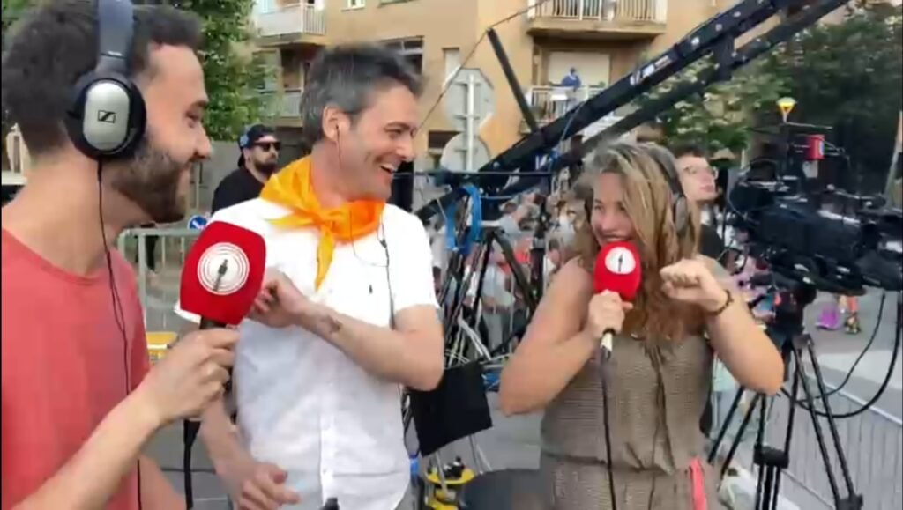
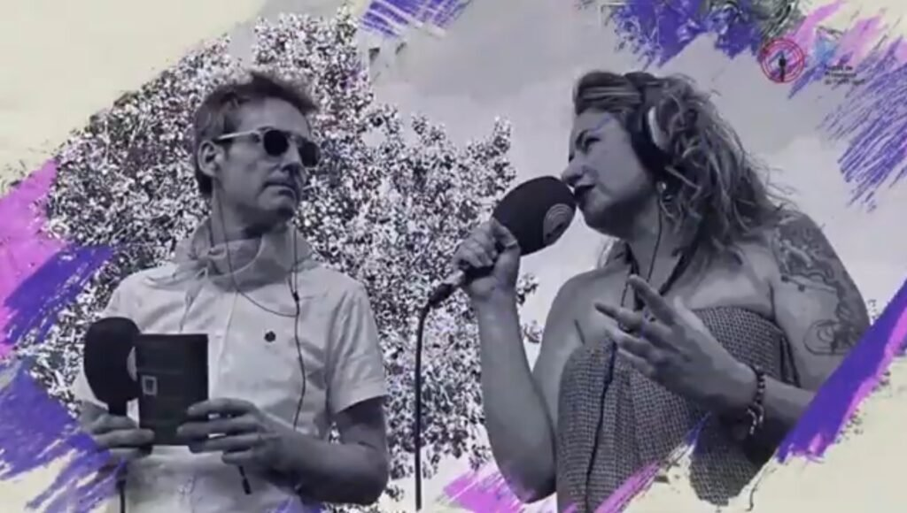
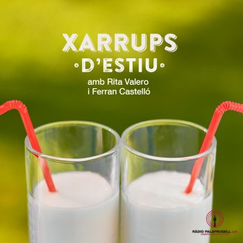
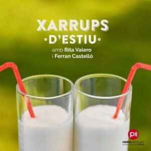

<?xml version="1.0" encoding="UTF-8"?><rss version="2.0"
	xmlns:content="http://purl.org/rss/1.0/modules/content/"
	xmlns:wfw="http://wellformedweb.org/CommentAPI/"
	xmlns:dc="http://purl.org/dc/elements/1.1/"
	xmlns:atom="http://www.w3.org/2005/Atom"
	xmlns:sy="http://purl.org/rss/1.0/modules/syndication/"
	xmlns:slash="http://purl.org/rss/1.0/modules/slash/"
	>

<channel>
	<title>Programas | Rita Valero</title>
	<atom:link href="./index.html" rel="self" type="application/rss+xml" />
	<link>../../../index.html</link>
	<description>Voz y palabras</description>
	<lastBuildDate>Sat, 13 Dec 2025 10:16:09 +0000</lastBuildDate>
	<language>ca</language>
	<sy:updatePeriod>
	hourly	</sy:updatePeriod>
	<sy:updateFrequency>
	1	</sy:updateFrequency>
	<generator>https://wordpress.org/?v=7.1.3</generator>

<image>
	<url>../../../wp-content/uploads/2021/08/cropped-favicon-rita-valero-32x32.jpg</url>
	<title>Programas | Rita Valero</title>
	<link>../../../index.html</link>
	<width>32</width>
	<height>32</height>
</image> 
	<item>
		<title>Filosofart ràdio</title>
		<link>../../../project/filosofart/index.html</link>
					<comments>../../../project/filosofart/index.html#respond</comments>
		
		<dc:creator><![CDATA[Rita Valero]]></dc:creator>
		<pubDate>Sat, 13 Dec 2025 09:21:43 +0000</pubDate>
				<guid isPermaLink="false">../../../index.html#038;p=1791</guid>

					<description><![CDATA[Filosofart nació primero como un taller de arte y filosofía, realizado en diferentes sesiones, en la Biblioteca de Palafrugell. Más adelante, en el magazín Mode Avió, conducido por Ferran Castelló, Filosofart se convierte en una sección quincenal, un espacio donde el pensamiento se atreve a caminar sin prisa, tomando del arte su inspiración. No busca [&#8230;]]]></description>
										<content:encoded><![CDATA[<p data-start="0" data-end="583"><strong><em>Filosofart</em></strong> nació primero como un <a href="../../../project/filosof-art/index.html">taller de arte y filosofía</a>, realizado en diferentes sesiones, en la Biblioteca de Palafrugell.</p>
<p data-start="0" data-end="583">Más adelante, en el magazín <em data-start="3" data-end="14">Mode Avió</em>, conducido por Ferran Castelló, <em>Filosofart</em> se convierte en una sección quincenal, un espacio donde el pensamiento se atreve a caminar sin prisa, tomando del arte su inspiración. No busca explicar ni convencer; intenta, más bien, recuperar la antigua costumbre de dialogar.</p>
<p data-start="0" data-end="583">En cada entrega, la filosofía y las obras: ya sean <strong>cuadros, música, relatos, escenas cinematográficas </strong>o<strong> fragmentos de la actualidad</strong>, se encuentran como dos voces que no siempre dicen lo mismo, pero que se reconocen en la necesidad de entender qué significa ser humanos en un mundo que cambia a gran velocidad.</p>
<p data-start="585" data-end="1118">La sección propone un tipo de conversación interior. Cuando observamos un lienzo, una secuencia o un gesto cotidiano, nuestra mirada no es nunca inocente: trae consigo preguntas, miedos, intuiciones. <em data-start="785" data-end="797">Filosofart</em> se instala justo ahí, en ese cruce minúsculo donde algo del mundo toca algo de nosotros. Es un laboratorio silencioso donde una imagen puede convertirse en una pregunta moral, donde un cuento despliega dudas sobre nuestra libertad, donde una noticia aparentemente trivial revela las tensiones profundas de nuestra época.</p>
<p data-start="1120" data-end="1820">La filosofía aporta el andamiaje: ofrece conceptos, historias del pensamiento, herramientas para pensar sin caer en la arrogancia de la respuesta definitiva. El arte, por su parte, aporta la fisura, aquello que escapa a las palabras y obliga a mirar de nuevo. La colaboración en <em data-start="1399" data-end="1410">Mode Avió</em> no pretende resolver enigmas, sino acompañar la experiencia de preguntarse. A veces mirando un detalle imperceptible de una pintura; otras, deteniéndose en una frase que resuena tras haber escuchado una canción. Siempre con la convicción de que lo estético y lo filosófico no son mundos paralelos, sino dos formas complementarias de explorar la misma dificultad: comprender quiénes somos y qué lugar ocupamos.</p>
<p data-start="1822" data-end="2076" data-is-last-node="" data-is-only-node="">En ese encuentro <em data-start="1844" data-end="1856">Filosofart </em>es un gesto de pausa en medio del ruido, una invitación a pensar sin miedo, a mirar con más profundidad, a permitir que una obra nos descubra una parte de nosotros que todavía no conocíamos.</p>
<p data-start="1822" data-end="2076" data-is-last-node="" data-is-only-node="">
]]></content:encoded>
					
					<wfw:commentRss>../../../project/filosofart/feed/index.html</wfw:commentRss>
			<slash:comments>0</slash:comments>
		
		
			</item>
		<item>
		<title>20 anys d’Espai Dona Palafrugell</title>
		<link>../../../project/20-anys-despai-dona-palafrugell/index.html</link>
					<comments>../../../project/20-anys-despai-dona-palafrugell/index.html#respond</comments>
		
		<dc:creator><![CDATA[Rita Valero]]></dc:creator>
		<pubDate>Tue, 25 Nov 2025 19:02:52 +0000</pubDate>
				<guid isPermaLink="false">../../../index.html#038;p=1756</guid>

					<description><![CDATA[Fa vint anys, a Palafrugell, va néixer un espai petit però immens. Un lloc on moltes dones han trobat la força que, potser, creien perduda. Un lloc on s’escolta sense jutjar, on s’acompanya sense pressa, on s’encén la llum quan tot sembla fosc. Aquest espai és, i ha estat, Espai Dona. El seu naixement no [&#8230;]]]></description>
										<content:encoded><![CDATA[<p><span style="font-weight: 400;">Fa vint anys, a Palafrugell, va néixer un espai petit però immens. Un lloc on moltes dones han trobat la força que, potser, creien perduda. Un lloc on s’escolta sense jutjar, on s’acompanya sense pressa, on s’encén la llum quan tot sembla fosc. Aquest espai és, i ha estat, Espai Dona.</span></p>
<p><span style="font-weight: 400;">El seu naixement no va ser casual. Va ser fruit d’un temps de canvi, d’una societat que començava a posar nom al que durant massa anys havia estat silenciat: la violència masclista, la desigualtat, la falta d’oportunitats. </span></p>
<p><span style="font-weight: 400;">L’any 2004, l’Estat espanyol aprovava la Llei Integral contra la Violència de Gènere. Un any després, Palafrugell responia amb convicció i sensibilitat creant el seu propi servei, pioner a les comarques gironines.</span></p>
<p><span style="font-weight: 400;">Des d’aleshores, Espai Dona ha crescut amb el poble. Ha escoltat històries, ha donat suport, ha teixit complicitats i ha ajudat a construir consciència. Ha estat un reflex de la societat, però també un motor de canvi, posant rostre, nom i veu a tantes realitats amagades.</span></p>
<p><span style="font-weight: 400;">Avui, dues dècades després, celebrem no només l’aniversari d’un servei, sinó el camí col·lectiu cap a la igualtat i la llibertat. </span></p>
<p><span style="font-weight: 400;">Recordem les primeres passes, reconeixem els avenços legislatius que ho han fet possible i mirem endavant amb la mateixa determinació que aquell 2005.</span></p>
<p>Pots escoltar el Programa Especial de ràdio que vam fer, en directe, des de la seu d&#8217;Espai Dona, per Commemorar aquest 20è aniversari al següent enllaç:</p>
<p><a href="https://podcasts.radiopalafrugell.cat/@20AnysEspaiDona/episodis">20 Anys d&#8217;Espai Dona</a></p>
<p>El programa està dividit en 3 parts:</p>
<ol>
<li><strong>El naixement i la trajectòria d&#8217;Espai Dona: </strong>on repassem com va nèixer i com ha evolucionat el servei, amb les intervencions de Maria José Merino, cap de l’àrea d’Acció social, Ciutadania i Joventut, i Sònia Vivolas, tècnica d’Igualtat. I sentim els missatges que ens han fet arribar Marta Vergonyós, Ruth Bosshard, l’antiga conserge Lola Quesada i les exregidores Mònica Tauste i Roser Massaguer. Inclou la cançons del 25N de Marina Gil (2019).</li>
<li><strong>Els projecte d&#8217;Espai Dona: </strong>on presentem els projectes que ha fet i fa Espai Dona, com <em>Creactiva’t</em>, tallers als centres educatius i el projecte <em>El Benestar al centre</em>. Entrevistem Marta Vergonyós Cabratosa, Maria José Cruz, Sònia Vivolas i Mar Batallé. A més, l’artista Aitana Gilabert (Eye Tana) ens presenta i fa un petit avançament de la cançó que estrenarà pel 25N. Sentim els missatges que ens han fet arribar l’Escola Torres i Jonama i l’institut Baix Empordà, a més de Marina Trias, Víctor Illescas, Júlia Alemany, Arar i Tamara Navarro. Ens acompanyen les cançons del 25N de Paula Sánchez (2024), Rita Valero (2014) i Mireia Costa (2021).</li>
<li><strong>Celebració i perspectives de futur: </strong>on recollim la celebració de les activitats del 20è aniversari, amb la projecció del documental “Empieza en ti”, formacions i la presentació de “Més poètica i menys estètica” amb Laia Estremeiro. Entrevistem la regidora d’Acció Social, Ciutadania i Habitatge, Margarita Mauri, que també ens parla sobre el pla d’igualtat municipal i els grups de treball amb educació.Sentim les cançons del 25N d’Anna Sáez, els Festucs i diverses dones que interpreten un tema de Roba Estesa.</li>
</ol>
]]></content:encoded>
					
					<wfw:commentRss>../../../project/20-anys-despai-dona-palafrugell/feed/index.html</wfw:commentRss>
			<slash:comments>0</slash:comments>
		
		
			</item>
		<item>
		<title>Festes de Primavera</title>
		<link>../../../project/1748/index.html</link>
					<comments>../../../project/1748/index.html#respond</comments>
		
		<dc:creator><![CDATA[Rita Valero]]></dc:creator>
		<pubDate>Tue, 25 Nov 2025 18:35:55 +0000</pubDate>
				<guid isPermaLink="false">../../../index.html#038;p=1748</guid>

					<description><![CDATA[Las Festes de Primavera de Palafrugell, el Carroussel Costa Brava o Carnaval de Carnavals, no son simplemente unas fiestas más: son una tradición que nació como un susurro de rebeldía y se convirtió en una explosión de creatividad colectiva. Estas celebraciones tienen su origen en 1963, cuando el carnaval estaba prohibido, y un grupo de [&#8230;]]]></description>
										<content:encoded><![CDATA[<p data-start="246" data-end="705">Las <strong data-start="250" data-end="288">Festes de Primavera de Palafrugell</strong>, el <strong data-start="324" data-end="350">Carroussel Costa Brava </strong>o<strong data-start="324" data-end="350"> Carnaval de Carnavals,</strong> no son simplemente unas fiestas más: son una tradición que nació como un susurro de rebeldía y se convirtió en una explosión de creatividad colectiva. Estas celebraciones tienen su origen en 1963, cuando el carnaval estaba prohibido, y un grupo de jóvenes no quiso renunciar a sus disfraces ni al deseo de desfilar.</p>
<p data-start="707" data-end="1489">Hoy, el Carroussel es la columna vertebral de estas fiestas: un desfile de carrozas y comparsas que en verano recorre las calles del casco antiguo como un carnaval de carnavales. <br data-start="926" data-end="929" />Más allá de la estética, estas fiestas son una forma de comunidad: durante meses, las collas (las agrupaciones que construyen las carrozas y comparsas) trabajan con pasión. Se ensaya, se pinta, se planifica, se maquilla; y luego todo eso, esa ilusión, ese ingenio, se exhibe en una tarde llena de magia y color. <br data-start="1276" data-end="1279" />El Carroussel ha sido declarado <strong data-start="1311" data-end="1360">Element Festiu Tradicional d’Interès Nacional</strong>, lo que refuerza su valor no solo local, sino como parte del patrimonio festivo catalán.</p>
<p data-start="1491" data-end="1816">En mi papel de presentadora para Ràdio Palafrugell y también para las retransmisiones por redes como YouTube o Instagram, he tenido la suerte de vivir de cerca cuatro ediciones especialmente significativas: las de los años conmemorativos 60, 61, 62 y 63. A continuación comparto un recorrido personal y narrativo por cada una.</p>
<h2 data-start="1823" data-end="1874">1. <strong data-start="1829" data-end="1874">La 60.ª edición (la primera que presenté)</strong></h2>
<div id="attachment_1750" style="width: 1034px" class="wp-caption aligncenter"><p id="caption-attachment-1750" class="wp-caption-text"><em>Junto a Ferran Castelló y David Galcerán</em></p></div>
<p data-start="1876" data-end="2290">La 60.ª edición fue todo un punto de inflexión: llegó después de un silencio forzado, de dos años sin Carroussel a causa de la pandemia, y por eso su carga simbólica era enorme. La presentación oficial tuvo lugar con una cena popular que reunió a más de 250 personas en l’espai de la Bòbila, un momento íntimo pero lleno de expectativa.</p>
<p data-start="2292" data-end="2747">Para homenajear la historia del Carroussel, se creó un espectáculo titulado <strong data-start="2368" data-end="2394">“La Màquina del Temps”</strong>, un viaje divertido y nostálgico por las décadas, recordando a todas las collas que han mantenido viva esta tradición. Además, ese año se unió un guiño artístico antiguo-nuevo: el mural del artista Roc Blackblock en Palafrugell, que aporta memoria visual al paisaje urbano.</p>
<p data-start="2749" data-end="3106">En la pasarela de ese domingo 5 de junio de 2022 desfilaron 25 collas, repartidas en diferentes categorías: carrozas inéditas, comparsas inéditas, carrozas no inéditas, animación&#8230;  entre las inéditas había colles locales que se habían preparado con muchas ganas.</p>
<p data-start="3108" data-end="3413">Presentarlo fue para mí un privilegio: no solo por celebrar el sesenta aniversario, sino porque sentí que retomábamos algo que no podíamos dar ya por sentado. En la emisora, en antena, mi voz recogía la alegría contenida de un pueblo que había esperado y ahora volvía a volcarse con fuerza en sus fiestas.</p>
<p data-start="3108" data-end="3413"></p>
<h2 data-start="3420" data-end="3445">2. <strong data-start="3426" data-end="3445">La 61.ª edición</strong></h2>
<p data-start="3447" data-end="3829">Al año siguiente, la 61.ª edición se vivió con una energía renovada. El escenario ya no era solo la historia: era también la proyección hacia el futuro. En mayo de 2023 se presentó durante una gran cena en la Bòbila (esta vez con unos 400 asistentes) donde no faltaron las risas, los abrazos y la emoción por retomar la cotidianeidad festiva.</p>
<p data-start="3831" data-end="4139">El acto de presentación incluyó un espectáculo luminiscente y musical llamado <strong data-start="3909" data-end="3935">“La teva cara em sona”</strong>, que dio pistas sobre la creatividad que veríamos desfilando. Esa mezcla de nostalgia y frescura, de mirar atrás y adelante al mismo tiempo, fue el tono dominante.</p>
<p data-start="4141" data-end="4460">En el desfile del 4 de junio de 2023 también participaron 14 collas, repartidas entre las distintas categorías: inéditas, no inéditas, comparsas, animación… Algunas comparsas venían de fuera, pero el espíritu local seguía muy vivo.</p>
<p data-start="4462" data-end="4736">Como presentadora, esa edición fue especialmente emocionante: estrenaba una familiaridad con la fiesta, pero añadimos la parte audiovisual. Fue un Carroussel vibrante, que puedes ver en este enlace:</p>
<p><iframe loading="lazy" title="61è Carroussel Costa Brava de Palafrugell 2023 a Ràdio Palafrugell" width="1080" height="608" src="https://www.youtube.com/embed/cpwM9vxFMxk?feature=oembed"  allow="accelerometer; autoplay; clipboard-write; encrypted-media; gyroscope; picture-in-picture; web-share" referrerpolicy="strict-origin-when-cross-origin" allowfullscreen></iframe></p>
<p>&nbsp;</p>
<h2 data-start="4743" data-end="4768">3. <strong data-start="4749" data-end="4768">La 62.ª edición</strong></h2>
<p data-start="4770" data-end="5132">La 62.ª edición, celebrada el <strong data-start="4800" data-end="4822">2 de junio de 2024</strong>, presentó algunas novedades de base formal: según las bases del concurso, el jurado valoró con cuidado técnico diferentes aspectos: originalidad, acabados, espectáculo, maquillaje, caracterización…, y también había una partida económica interesante para los premios.</p>
<p data-start="5134" data-end="5475">Esa tarde, como presentadora, noté que la gente era más consciente del valor patrimonial del Carroussel: ya no era sólo fiesta popular, sino algo que muchos consideraban parte de la identidad cultural de Palafrugell. Además, la organización local había aumentado la profesionalidad en los discursos, en la producción, en la comunicación.</p>
<p data-start="5477" data-end="5892">Hubo también un crecimiento visible en la calidad de las carrozas y comparsas: el trabajo artesanal todavía más refinado, los materiales, la construcción, el vestuario, y eso se notaba tanto en el escenario como en las calles. En mi locución por la radio, intenté subrayar ese esfuerzo: hablar no sólo de la belleza plástica, sino del proceso, del equipo humano detrás de cada esfera, cada figura, cada coreografía.</p>
<p><iframe loading="lazy" title="62è Carroussel Costa Brava amb Ràdio Palafrugell i Festes de Primavera 2024" width="1080" height="608" src="https://www.youtube.com/embed/3FC8WZGpWeg?feature=oembed"  allow="accelerometer; autoplay; clipboard-write; encrypted-media; gyroscope; picture-in-picture; web-share" referrerpolicy="strict-origin-when-cross-origin" allowfullscreen></iframe></p>
<p>&nbsp;</p>
<h2 data-start="5899" data-end="5924">4. <strong data-start="5905" data-end="5924">La 63.ª edición</strong></h2>
<p data-start="5926" data-end="6195">Y llegamos a la 63.ª edición, celebrada el <strong data-start="5978" data-end="6000">1 de junio de 2025. </strong>Esta fue una edición para consolidar lo vivido y abrir nuevos horizontes, una mezcla de tradición arraigada y ganas de innovar.</p>
<p data-start="6197" data-end="6653">En esta ocasión participaron <strong data-start="6226" data-end="6239">25 collas</strong>, lo cual confirma la vitalidad del Carroussel. La gran ganadora fue la <strong data-start="6351" data-end="6369">Colla Garnatxa</strong> con su propuesta <strong data-start="6387" data-end="6426">“Khay Shaa, la tempesta del desert”</strong>, que se llevó el primer premio de carrozas inéditas y también el <strong data-start="6492" data-end="6524">Trofeu Carnaval de Carnavals</strong>, un reconocimiento honorífico que significa mucho para quienes construyen con el alma.</p>
<p data-start="6655" data-end="6911">Por otro lado, en la comparsa inèdita, <strong data-start="6694" data-end="6708">The Queens</strong> brillaron con <strong data-start="6723" data-end="6754">“La petrificació de Medusa”</strong>, un tema que combinó la mitología con la teatralidad y les valió no solo el premio principal sino varios accésits.</p>
<p data-start="6913" data-end="7314">Como presentadora, en esta edición, quise que mi voz hiciera de puente entre la emoción y el esfuerzo de quienes han trabajado durante meses, y la sonrisa del público cuando las carrozas pasan, o al final, cuando se plantan para exhibirse.</p>
<p data-start="7334" data-end="7668">Contar estas cuatro ediciones desde dentro —60, 61, 62 y 63— ha sido para mí algo más que un trabajo: ha sido un viaje emocional. He visto cómo el Carroussel se reinventa sin perder su esencia, cómo las collas siguen soñando con crear mundos efímeros sobre plataformas móviles, cómo el pueblo se llena de color, música y complicidad.</p>
<p data-start="7670" data-end="8040">Y mientras escribo esto, pienso en las futuras ediciones: en los temas, en los diseños, en las historias que aún están por venir. Porque si algo me ha quedado claro, es que las Festes de Primavera no viven sólo de su pasado: viven para seguir celebrando cada año, con la misma ilusión que cuando aquellos jóvenes decidieron lucir sus disfraces y desafiar la prohibición.</p>
<p><iframe loading="lazy" title="63è Carroussel Costa Brava de Palafrugell 2025 | Retransmissió en vídeo de Ràdio Palafrugell" width="1080" height="608" src="https://www.youtube.com/embed/jpUlDkjmdio?feature=oembed"  allow="accelerometer; autoplay; clipboard-write; encrypted-media; gyroscope; picture-in-picture; web-share" referrerpolicy="strict-origin-when-cross-origin" allowfullscreen></iframe></p>
<p>&nbsp;</p>
]]></content:encoded>
					
					<wfw:commentRss>../../../project/1748/feed/index.html</wfw:commentRss>
			<slash:comments>0</slash:comments>
		
		
			</item>
		<item>
		<title>El podcast de Rita Valero «Sí, i què?» gana el Premio RAC a la Inclusión</title>
		<link>../../../project/el-podcast-de-rita-valero-si-i-que-gana-el-premio-rac-a-la-inclusion/index.html</link>
					<comments>../../../project/el-podcast-de-rita-valero-si-i-que-gana-el-premio-rac-a-la-inclusion/index.html#respond</comments>
		
		<dc:creator><![CDATA[Rita Valero]]></dc:creator>
		<pubDate>Tue, 01 Aug 2023 07:12:25 +0000</pubDate>
				<guid isPermaLink="false">../../../index.html#038;p=1571</guid>

					<description><![CDATA[El podcast “Sí, i què?”, elaborado por Rita Valero y con la participación de Maria Sureda en la primera etapa, ha ganado el premio Ràdio Associació en la categoría de Inclusión “Sí, i què?” se emite desde septiembre de 2022, y tiene el objetivo de romper esquemas y dar a conocer realidades que nos acompañan [&#8230;]]]></description>
										<content:encoded><![CDATA[<blockquote><p><strong>El podcast “<em>Sí, i què?</em>”, elaborado por Rita Valero y con la participación de Maria Sureda en la primera etapa, ha ganado el premio Ràdio Associació en la categoría de Inclusión</strong> <strong>“<em>Sí, i què?</em>” se emite desde septiembre de 2022, y tiene el objetivo de romper esquemas y dar a conocer realidades que nos acompañan y no vemos. </strong></p></blockquote>
<p>El podcast “<em>Sí, i què?</em>” ha ganado el premio Ràdio Associació de Catalunya 2023 en la categoría de Inclusión. El jurado de los galardones, los más importantes de la radio en catalán, destaca que habla «del día a día de personas con diversidad funcional y en riesgo de exclusión social». El podcast está dirigido y presentado y montado por la comunicadora Rita Valero, especialista en inclusión social y colaboradora de Ràdio Palafrugell desde 2013. El presidente de Ràdio Associació de Catalunya, Jordi Margarit, acompañado de la secretaria del jurado, Margarida Moles,  han explicado que el jurado ha valorado del «<em>Sí, i què?</em>» el hecho de que trate “de forma desacomplejada y sin embargo seria temáticas como el sexo o la manera de superar los obstáculos del día a día”. “<em>Sí, i què?</em>” habla del día a día de personas con diversidad funcional y en riesgo de exclusión social, tratando la superación individual y colectiva de las barreras que se encuentran y cómo hacerles frente. Se rompen esquemas para dar a conocer las realidades que muchas veces no se ven.</p>
<p>La gala de entrega de premios se celebró en el Auditorio ONCE el pasado 20 de abril, y fue presentada por Jair Domínguez, Neus Rossell y Peyu (“El Búnker”).</p>
<p>Puedes ver el acto en el siguiente enlace: <a href="https://youtu.be/UWgtDg2vEYw?t=274" target="_blank" rel="noopener"><strong>23ns PREMIS RÀDIO ASSOCIACIÓ. CATEGORIA D&#8217;INCLUSIÓ</strong></a></p>
<p><a href="https://radioassociacio.cat/premios-radio-associacio-2023/" target="_blank" rel="noopener">Premios Radio Associació</a></p>
<p> </p>
]]></content:encoded>
					
					<wfw:commentRss>../../../project/el-podcast-de-rita-valero-si-i-que-gana-el-premio-rac-a-la-inclusion/feed/index.html</wfw:commentRss>
			<slash:comments>0</slash:comments>
		
		
			</item>
		<item>
		<title>Sí, i què?</title>
		<link>../../../project/si-i-que/index.html</link>
					<comments>../../../project/si-i-que/index.html#respond</comments>
		
		<dc:creator><![CDATA[Rita Valero]]></dc:creator>
		<pubDate>Thu, 13 Oct 2022 19:35:39 +0000</pubDate>
				<guid isPermaLink="false">../../../index.html#038;p=1508</guid>

					<description><![CDATA[Sí, i què? Es el primer podcast sobre inclusión social en catalán. Ideado, dirigido y editado por Rita Valero. En los 8 primeros capítulos, con la colaboración de Maria Sureda. Rompiendo esquemas, y conociendo realidades que nos acompañan y que a veces no vemos. En emisión desde Septiembre de 2022. Premio RAC a la Inclusión 2023. Notícia [&#8230;]]]></description>
										<content:encoded><![CDATA[<p><em>Sí, i què?</em> Es el primer podcast sobre<strong> inclusión social</strong> en catalán. Ideado, dirigido y editado por Rita Valero.</p>
<p>En los 8 primeros capítulos, con la colaboración de Maria Sureda.</p>
<p>Rompiendo esquemas, y conociendo realidades que nos acompañan y que a veces no vemos.</p>
<p>En emisión desde Septiembre de 2022.</p>
<p>Premio RAC a la Inclusión 2023. Notícia relacionada.</p>
<p><a href="https://www.youtube.com/playlist?list=PLDaBynBVN4hMA1Z0gKKjL2GL7cWXNBN2N" target="_blank" rel="noopener">Sí, i què? en YouTube-T1</a></p>
<p><a href="https://www.youtube.com/watch?v=OgNICR7bFeQ&amp;list=PLDaBynBVN4hNB0kEfcKOCry0hprJDXFrJ" target="_blank" rel="noopener">Sí, i què? en YouTube-T2</a></p>
<p><a href="https://www.youtube.com/watch?v=nsZOjVU-2-M&amp;list=PLDaBynBVN4hNoMnEWXL7OM8o-ALH8Cf8P" target="_blank" rel="noopener">Sí, i què? en YouTube-T3</a></p>
<p><a href="https://radiopalafrugell.cat/podcasts/si-i-que/" target="_blank" rel="noopener">Sí i què? en Radio Palafrugell</a></p>
<p><a href="https://open.spotify.com/show/19eyFqAfHmae6AUGCOfF4E?si=bLoLRyziRsyysst2mO_xEA&amp;utm_source=copy-link" target="_blank" rel="noopener">Sí i què? en Spotify</a></p>
<p><a href="https://go.ivoox.com/sq/1665127" target="_blank" rel="noopener">Sí i què? en iVoox </a></p>
<p>&nbsp;</p>
]]></content:encoded>
					
					<wfw:commentRss>../../../project/si-i-que/feed/index.html</wfw:commentRss>
			<slash:comments>0</slash:comments>
		
		
			</item>
		<item>
		<title>En Clau de Dona &#8211; Temporadas 02-03-04</title>
		<link>../../../project/en-clau-de-dona-temporada-02/index.html</link>
					<comments>../../../project/en-clau-de-dona-temporada-02/index.html#respond</comments>
		
		<dc:creator><![CDATA[Rita Valero]]></dc:creator>
		<pubDate>Thu, 13 Oct 2022 19:07:40 +0000</pubDate>
				<guid isPermaLink="false">../../../index.html#038;p=1504</guid>

					<description><![CDATA[Presentado, dirigido y editado por Rita Valero, En Clau de Dona es un programa de entrevistas a mujeres emprendedoras del Empordà y alrededores. En Septiembre de 2022 empieza la segunda temporada del programa En Clau de Dona. En Clau de Dona T02 en YouTube En Octubre de 2023 empieza la tercera temporada del programa En Clau de Dona. [&#8230;]]]></description>
										<content:encoded><![CDATA[<p>Presentado, dirigido y editado por Rita Valero, <em>En Clau de Dona </em>es un programa de entrevistas a mujeres emprendedoras del Empordà y alrededores.</p>
<p>En Septiembre de 2022 empieza la segunda temporada del programa <em>En Clau de Dona.</em></p>
<p><a href="https://youtu.be/s3A6HAsqoQI">En Clau de Dona T02 en YouTube</a></p>
<p>En Octubre de 2023 empieza la tercera temporada del programa <em>En Clau de Dona.</em></p>
<p><a href="https://www.youtube.com/watch?v=jYyr2SA02Bo&amp;list=PLDaBynBVN4hOwBfVJmggrbO4AurAkhBhP" target="_blank" rel="noopener">En Clau de Dona T03 en YouTube</a></p>
<p>En Octubre de 2024 empieza la cuarta temporada del programa <em>En Clau de Dona.</em></p>
<p><a href="https://www.youtube.com/watch?v=4hveagGiSaU&amp;list=PLDaBynBVN4hMOtUuKcec7qNOQZh_wqS_6" target="_blank" rel="noopener">En Clau de Dona T04 en YouTube</a></p>
<p><a href="https://radiopalafrugell.cat/podcasts/en-clau-de-dona/" target="_blank" rel="noopener">En Clau de Dona en Ràdio Palafrugell</a></p>
<p><a href="https://open.spotify.com/show/14kAePwkkV2tIn5A4R9lmN?si=yTBgWmxOR3OcCjC0bzewMA&amp;utm_source=copy-link" target="_blank" rel="noopener">En Clau de Dona en Spotify</a></p>
<p><a href="https://go.ivoox.com/sq/1656137" target="_blank" rel="noopener">En Clau de Dona en iVoox</a></p>
<p>&nbsp;</p>
]]></content:encoded>
					
					<wfw:commentRss>../../../project/en-clau-de-dona-temporada-02/feed/index.html</wfw:commentRss>
			<slash:comments>0</slash:comments>
		
		
			</item>
		<item>
		<title>Xarrups d&#8217;Estiu</title>
		<link>../../../project/xarrups-destiu/index.html</link>
					<comments>../../../project/xarrups-destiu/index.html#respond</comments>
		
		<dc:creator><![CDATA[Rita Valero]]></dc:creator>
		<pubDate>Fri, 31 Dec 2021 17:04:34 +0000</pubDate>
				<guid isPermaLink="false">http://novaweb.ritavalero.com/?post_type=project&#038;p=735</guid>

					<description><![CDATA[En emisión durante 3 temporadas: verano de 2019, verano de 2020 y verano de 2022: Presentado y dirigido por Rita Valero y Ferran Castelló, Xarrups d&#8217;Estiu es el programa más refrescante del verano de Ràdio Palafrugell. Vivimos los principales acontecimientos, las fiestas y conciertos que tienen lugar en la comarca, hablamos con los protagonistas y [&#8230;]]]></description>
										<content:encoded><![CDATA[<p><strong>En emisión durante 3 temporadas: verano de 2019, verano de 2020 y verano de 2022:</strong></p>
<p><a href="https://radiopalafrugell.cat/shows/xarrups-destiu/" target="_blank" rel="noopener"></a></p>
<p style="text-align: left;">Presentado y dirigido por Rita Valero y Ferran Castelló, <em>Xarrups d&#8217;Estiu</em> es el programa más refrescante del verano de Ràdio Palafrugell. Vivimos los principales acontecimientos, las fiestas y conciertos que tienen lugar en la comarca, hablamos con los protagonistas y tratamos los temas indispensables del verano. Ferran Castelló y Rita Valero nos acompañan cada sábado a las 11 de la mañana y en redes sociales.</p>
<p><a href="https://radiopalafrugell.cat/shows/xarrups-destiu/" target="_blank" rel="noopener">Xarrups d&#8217;Estiu</a></p>
<p><a href="https://www.ivoox.com/podcast-xarrups-d-estiu_sq_f1587812_1.html" target="_blank" rel="noopener">Xarrups d&#8217;Estiu Podcast en iVoox</a></p>
<p><strong>Temporadas anteriores:</strong></p>
<p></p>
<p style="text-align: justify;"><em>Xarrups d&#8217;Estiu</em> es un programa magazinne diario, que se emite durante los meses de Julio y Agosto.</p>
<p style="text-align: justify;">Con diversas secciones de interés y actualidad, noticias, entrevistas, agenda cultural, dedicatorias.</p>
<p style="text-align: justify;">Rita Valero y Ferran Castelló, nos ponen al día de todos los acontecimientos de la ciudad.</p>
<p>Puedes escuchar aquí algunos programas:</p>
<ul>
<li><strong>Xarrups d&#8217;Estiu:</strong> Lectures d&#8217;estiu i moltes coses més:</li>
</ul>
<audio class="wp-audio-shortcode" id="audio-735-1" preload="none" style="width: 100%;" controls="controls"><source type="audio/mpeg" src="../../../wp-content/uploads/2021/12/Xarrups-dEstiu-2018-08-31.mp3" /><a href="../../../wp-content/uploads/2021/12/Xarrups-dEstiu-2018-08-31.mp3">../../../wp-content/uploads/2021/12/Xarrups-dEstiu-2018-08-31.mp3</a></audio>
<p>&nbsp;</p>
<ul>
<li><strong>Xarrups d&#8217;Estiu: </strong>Manualitats, receptes i moltes coses més:</li>
</ul>
<audio class="wp-audio-shortcode" id="audio-735-2" preload="none" style="width: 100%;" controls="controls"><source type="audio/mpeg" src="../../../wp-content/uploads/2021/12/Xarrups-dEstiu-2018-08-28.mp3" /><a href="../../../wp-content/uploads/2021/12/Xarrups-dEstiu-2018-08-28.mp3">../../../wp-content/uploads/2021/12/Xarrups-dEstiu-2018-08-28.mp3</a></audio>
<p>&nbsp;</p>
<ul>
<li><strong>Xarrups d&#8217;Estiu: </strong>Emocions i moltes coses més:</li>
</ul>
<audio class="wp-audio-shortcode" id="audio-735-3" preload="none" style="width: 100%;" controls="controls"><source type="audio/mpeg" src="../../../wp-content/uploads/2021/12/Xarrups-dEstiu-2018-08-27.mp3" /><a href="../../../wp-content/uploads/2021/12/Xarrups-dEstiu-2018-08-27.mp3">../../../wp-content/uploads/2021/12/Xarrups-dEstiu-2018-08-27.mp3</a></audio>
<p>&nbsp;</p>
<ul>
<li><strong>Xarrups d&#8217;Estiu: </strong>Coses rares per comprar a internet i moltes coses més:</li>
</ul>
<audio class="wp-audio-shortcode" id="audio-735-4" preload="none" style="width: 100%;" controls="controls"><source type="audio/mpeg" src="../../../wp-content/uploads/2021/12/Xarrups-dEstiu-2018-08-22.mp3" /><a href="../../../wp-content/uploads/2021/12/Xarrups-dEstiu-2018-08-22.mp3">../../../wp-content/uploads/2021/12/Xarrups-dEstiu-2018-08-22.mp3</a></audio>
<p>&nbsp;</p>
<p>&nbsp;</p>
]]></content:encoded>
					
					<wfw:commentRss>../../../project/xarrups-destiu/feed/index.html</wfw:commentRss>
			<slash:comments>0</slash:comments>
		
		
			</item>
		<item>
		<title>En Clau de Dona &#8211; Temporada 01</title>
		<link>../../../project/en-clau-de-dona/index.html</link>
					<comments>../../../project/en-clau-de-dona/index.html#respond</comments>
		
		<dc:creator><![CDATA[Rita Valero]]></dc:creator>
		<pubDate>Fri, 31 Dec 2021 17:03:55 +0000</pubDate>
				<guid isPermaLink="false">http://novaweb.ritavalero.com/?post_type=project&#038;p=738</guid>

					<description><![CDATA[Durante muchos años he hecho colaboraciones en la radio, porque me encanta comunicar. Durante muchos años he estado haciendo entrevistas a grupos de música emergentes y también a músicos de renombre. Y ha sido muy gratificante, la verdad. Pero en esta ocasión he decidido dar voz a mujeres emprendedoras, que hacen de su día a [&#8230;]]]></description>
										<content:encoded><![CDATA[<p>Durante muchos años he hecho colaboraciones en la radio, porque me encanta comunicar.</p>
<p>Durante muchos años he estado haciendo entrevistas a grupos de música emergentes y también a músicos de renombre.</p>
<p>Y ha sido muy gratificante, la verdad.</p>
<p>Pero en esta ocasión he decidido dar voz a mujeres emprendedoras, que hacen de su día a día un ejemplo de sororidad, y que demuestran que están aquí y son válidas y valientes.</p>
<p>Las irás encontrando en este enlace:</p>
<p><a href="https://youtube.com/playlist?list=PLDaBynBVN4hOOqKxNJOuS9-_gQAEN034T" target="_blank" rel="noopener">En Clau de Dona</a></p>
<p>Algunos de los programas no son entrevistas, sino que te cuento cosas muy interesantes sobre mujeres compositoras, aviadoras, científicas, históricas, etc.</p>
<p>Otras son las declaraciones y las palabras dichas por sí mismas, a las que agradezco su colaboración.</p>
<p>En Clau de Dona oo9: <a href="https://youtu.be/lsZaiisi8As" target="_blank" rel="noopener">La ciutadania de les dones</a></p>
<p>En Clau de Dona oo8: <a href="https://youtu.be/Q-JsmwMQEQU" target="_blank" rel="noopener">Isa Anglada, empresària, professora de música</a></p>
<p>En Clau de Dona oo7: <a href="https://youtu.be/EBgqfSkcOZk" target="_blank" rel="noopener">Conxa Sauri, arxivera</a></p>
<p>En Clau de Dona oo6: <a href="https://youtu.be/zTsKp3yzVn4" target="_blank" rel="noopener">Carol Bardera, naturòpata, terapeuta emocional, autora</a></p>
<p>En Clau de Dona oo5: <a href="https://youtu.be/HH4KpXMEths" target="_blank" rel="noopener">Olga Cercós, actriu i narradora oral</a></p>
<p>En Clau de Dona oo4: <a href="https://youtu.be/mXnSa30ltTg" target="_blank" rel="noopener">Actuals III</a></p>
<ul>
<li>Rigoberta Menchú, activista social gualtemalenca</li>
<li>Fatima Mernissi, escriptora marroquina</li>
<li>Rosa Parks, activista estatunidenca</li>
</ul>
<p>En Clau de Dona oo3: <a href="https://youtu.be/xCgNLZTaO1I" target="_blank" rel="noopener">Actuals II</a></p>
<ul>
<li>Dolores Ibarruri, «La Pasionaria», dirigent, política</li>
<li>Concepción Arenal, escriptora</li>
<li>Maria de Maeztu, pedagoga</li>
<li>Federica Montseny, política, sindicalista, escriptora</li>
</ul>
<p>En Clau de Dona oo2: <a href="https://youtu.be/pIZ2bp5hJZI" target="_blank" rel="noopener">Actuals I</a></p>
<ul>
<li>Dolors Vives i Pepa Colomer, aviadores i pilots catalanes</li>
<li>Dolores Aleu, metgessa catalana</li>
<li>Mª Teresa León, escriptora de la Generació del 27</li>
<li>Teresa Claramunt, diregent anarcosindicalista catalana</li>
<li>Maria Goyri, escriptora</li>
</ul>
<p>En Clau de Dona oo1: <a href="https://youtu.be/__V1Ojp9R4I" target="_blank" rel="noopener">Compositores</a></p>
<p>&nbsp;</p>
<p>&nbsp;</p>
<p>&nbsp;</p>
<p>&nbsp;</p>
<p>&nbsp;</p>
]]></content:encoded>
					
					<wfw:commentRss>../../../project/en-clau-de-dona/feed/index.html</wfw:commentRss>
			<slash:comments>0</slash:comments>
		
		
			</item>
		<item>
		<title>Curiositats</title>
		<link>../../../project/viu-curiositats/index.html</link>
					<comments>../../../project/viu-curiositats/index.html#respond</comments>
		
		<dc:creator><![CDATA[Rita Valero]]></dc:creator>
		<pubDate>Fri, 31 Dec 2021 16:59:17 +0000</pubDate>
				<guid isPermaLink="false">http://novaweb.ritavalero.com/?post_type=project&#038;p=732</guid>

					<description><![CDATA[En emisión del 2017 al 2018. Curiositas, programa en el que Rita Valero junto a Ferran Castelló, narran con un toque de humor y mucha simpatía, de forma cómica y distendida, diferentes cosas curiosas que te pueden interesar. Puedes escucharlas aquí: Curiositat 78: Dits arrugats &#160; Curiositat 77: Cremades solars &#160; Curiositat 76: Consells fer [&#8230;]]]></description>
										<content:encoded><![CDATA[<p>En emisión del 2017 al 2018.</p>
<p style="text-align: justify;"><strong>Curiositas</strong>, programa en el que Rita Valero junto a Ferran Castelló, narran con un toque de humor y mucha simpatía, de forma cómica y distendida, diferentes cosas curiosas que te pueden interesar.</p>
<p style="text-align: justify;">Puedes escucharlas aquí:</p>
<p><strong>Curiositat 78:</strong> Dits arrugats</p>
<audio class="wp-audio-shortcode" id="audio-732-5" preload="none" style="width: 100%;" controls="controls"><source type="audio/mpeg" src="../../../wp-content/uploads/2021/12/Curiositats-78-Dits-arrugats.mp3" /><a href="../../../wp-content/uploads/2021/12/Curiositats-78-Dits-arrugats.mp3">../../../wp-content/uploads/2021/12/Curiositats-78-Dits-arrugats.mp3</a></audio>
<p>&nbsp;</p>
<p><strong>Curiositat 77:</strong> Cremades solars</p>
<audio class="wp-audio-shortcode" id="audio-732-6" preload="none" style="width: 100%;" controls="controls"><source type="audio/mpeg" src="../../../wp-content/uploads/2021/12/Curiositats-77-Cremades-solars.mp3" /><a href="../../../wp-content/uploads/2021/12/Curiositats-77-Cremades-solars.mp3">../../../wp-content/uploads/2021/12/Curiositats-77-Cremades-solars.mp3</a></audio>
<p>&nbsp;</p>
<p><strong>Curiositat 76:</strong> Consells fer maletes</p>
<audio class="wp-audio-shortcode" id="audio-732-7" preload="none" style="width: 100%;" controls="controls"><source type="audio/mpeg" src="../../../wp-content/uploads/2021/12/Curiositats-76-Consells-fer-maletes.mp3" /><a href="../../../wp-content/uploads/2021/12/Curiositats-76-Consells-fer-maletes.mp3">../../../wp-content/uploads/2021/12/Curiositats-76-Consells-fer-maletes.mp3</a></audio>
<p>&nbsp;</p>
<p><strong>Curiositat 75:</strong> Temperatura xafogor, temperatura sensació</p>
<audio class="wp-audio-shortcode" id="audio-732-8" preload="none" style="width: 100%;" controls="controls"><source type="audio/mpeg" src="../../../wp-content/uploads/2021/12/Curiositats-75-Temperatura-xafogor-temperatura-sensacio.mp3" /><a href="../../../wp-content/uploads/2021/12/Curiositats-75-Temperatura-xafogor-temperatura-sensacio.mp3">../../../wp-content/uploads/2021/12/Curiositats-75-Temperatura-xafogor-temperatura-sensacio.mp3</a></audio>
<p>&nbsp;</p>
<p><strong>Curiositat 74:</strong> Història orxata</p>
<audio class="wp-audio-shortcode" id="audio-732-9" preload="none" style="width: 100%;" controls="controls"><source type="audio/mpeg" src="../../../wp-content/uploads/2021/12/Curiositats-74-Historia-orxata.mp3" /><a href="../../../wp-content/uploads/2021/12/Curiositats-74-Historia-orxata.mp3">../../../wp-content/uploads/2021/12/Curiositats-74-Historia-orxata.mp3</a></audio>
<p>&nbsp;</p>
<p><strong>Curiositat 73:</strong> Història para-sol</p>
<audio class="wp-audio-shortcode" id="audio-732-10" preload="none" style="width: 100%;" controls="controls"><source type="audio/mpeg" src="../../../wp-content/uploads/2021/12/Curiositats-73-Historia-para-sol.mp3" /><a href="../../../wp-content/uploads/2021/12/Curiositats-73-Historia-para-sol.mp3">../../../wp-content/uploads/2021/12/Curiositats-73-Historia-para-sol.mp3</a></audio>
<p>&nbsp;</p>
<p><strong>Curiositat 72:</strong> Història banyadors</p>
<audio class="wp-audio-shortcode" id="audio-732-11" preload="none" style="width: 100%;" controls="controls"><source type="audio/mpeg" src="../../../wp-content/uploads/2021/12/Curiositats-72-Historia-banyadors.mp3" /><a href="../../../wp-content/uploads/2021/12/Curiositats-72-Historia-banyadors.mp3">../../../wp-content/uploads/2021/12/Curiositats-72-Historia-banyadors.mp3</a></audio>
<p>&nbsp;</p>
<p><strong>Curiositat 71:</strong> Protectors solars</p>
<audio class="wp-audio-shortcode" id="audio-732-12" preload="none" style="width: 100%;" controls="controls"><source type="audio/mpeg" src="../../../wp-content/uploads/2021/12/Curiositats-71-Protectors-solars.mp3" /><a href="../../../wp-content/uploads/2021/12/Curiositats-71-Protectors-solars.mp3">../../../wp-content/uploads/2021/12/Curiositats-71-Protectors-solars.mp3</a></audio>
<p>&nbsp;</p>
<p><strong>Curiositat 70:</strong> Vegades que mirem el mòbil</p>
<audio class="wp-audio-shortcode" id="audio-732-13" preload="none" style="width: 100%;" controls="controls"><source type="audio/mpeg" src="../../../wp-content/uploads/2021/12/Curiositats-70-Vegades-mirar-el-mobil.mp3" /><a href="../../../wp-content/uploads/2021/12/Curiositats-70-Vegades-mirar-el-mobil.mp3">../../../wp-content/uploads/2021/12/Curiositats-70-Vegades-mirar-el-mobil.mp3</a></audio>
<p>&nbsp;</p>
<p><strong>Curiositat 69: </strong>Fatiga visual</p>
<audio class="wp-audio-shortcode" id="audio-732-14" preload="none" style="width: 100%;" controls="controls"><source type="audio/mpeg" src="../../../wp-content/uploads/2021/12/Curiositats-69-Fatiga-visual.mp3" /><a href="../../../wp-content/uploads/2021/12/Curiositats-69-Fatiga-visual.mp3">../../../wp-content/uploads/2021/12/Curiositats-69-Fatiga-visual.mp3</a></audio>
<p>&nbsp;</p>
<p><strong>Curiositat 68:</strong> Mosquits femella</p>
<audio class="wp-audio-shortcode" id="audio-732-15" preload="none" style="width: 100%;" controls="controls"><source type="audio/mpeg" src="../../../wp-content/uploads/2021/12/Curiositats-68-Mosquits-femella.mp3" /><a href="../../../wp-content/uploads/2021/12/Curiositats-68-Mosquits-femella.mp3">../../../wp-content/uploads/2021/12/Curiositats-68-Mosquits-femella.mp3</a></audio>
<p>&nbsp;</p>
<p><strong>Curiositat 67:</strong> Marques</p>
<audio class="wp-audio-shortcode" id="audio-732-16" preload="none" style="width: 100%;" controls="controls"><source type="audio/mpeg" src="../../../wp-content/uploads/2021/12/Curiositats-67-Marques.mp3" /><a href="../../../wp-content/uploads/2021/12/Curiositats-67-Marques.mp3">../../../wp-content/uploads/2021/12/Curiositats-67-Marques.mp3</a></audio>
<p>&nbsp;</p>
<p><strong>Curiositat 66:</strong> Festes de Primavera</p>
<audio class="wp-audio-shortcode" id="audio-732-17" preload="none" style="width: 100%;" controls="controls"><source type="audio/mpeg" src="../../../wp-content/uploads/2021/12/Curiositats-66-Festes-de-Primavera.mp3" /><a href="../../../wp-content/uploads/2021/12/Curiositats-66-Festes-de-Primavera.mp3">../../../wp-content/uploads/2021/12/Curiositats-66-Festes-de-Primavera.mp3</a></audio>
<p>&nbsp;</p>
<p><strong>Curiositat 65:</strong> Contrasenyes</p>
<audio class="wp-audio-shortcode" id="audio-732-18" preload="none" style="width: 100%;" controls="controls"><source type="audio/mpeg" src="../../../wp-content/uploads/2021/12/Curiositats-65-Contrasenyes.mp3" /><a href="../../../wp-content/uploads/2021/12/Curiositats-65-Contrasenyes.mp3">../../../wp-content/uploads/2021/12/Curiositats-65-Contrasenyes.mp3</a></audio>
<p>&nbsp;</p>
<p><strong>Curiositat 64:</strong> Audiències</p>
<audio class="wp-audio-shortcode" id="audio-732-19" preload="none" style="width: 100%;" controls="controls"><source type="audio/mpeg" src="../../../wp-content/uploads/2021/12/Curiositats-64-Audiencies.mp3" /><a href="../../../wp-content/uploads/2021/12/Curiositats-64-Audiencies.mp3">../../../wp-content/uploads/2021/12/Curiositats-64-Audiencies.mp3</a></audio>
<p>&nbsp;</p>
<p><strong>Curiositat 63:</strong> Spinner</p>
<audio class="wp-audio-shortcode" id="audio-732-20" preload="none" style="width: 100%;" controls="controls"><source type="audio/mpeg" src="../../../wp-content/uploads/2021/12/Curiositats-63-Spinner.mp3" /><a href="../../../wp-content/uploads/2021/12/Curiositats-63-Spinner.mp3">../../../wp-content/uploads/2021/12/Curiositats-63-Spinner.mp3</a></audio>
<p>&nbsp;</p>
<p><strong>Curiositat 62:</strong> Raspalls de dents</p>
<audio class="wp-audio-shortcode" id="audio-732-21" preload="none" style="width: 100%;" controls="controls"><source type="audio/mpeg" src="../../../wp-content/uploads/2021/12/Curiositats-62-Raspalls-de-dents.mp3" /><a href="../../../wp-content/uploads/2021/12/Curiositats-62-Raspalls-de-dents.mp3">../../../wp-content/uploads/2021/12/Curiositats-62-Raspalls-de-dents.mp3</a></audio>
<p>&nbsp;</p>
<p><strong>Curiositat 61:</strong> Dia del treballador/a</p>
<audio class="wp-audio-shortcode" id="audio-732-22" preload="none" style="width: 100%;" controls="controls"><source type="audio/mpeg" src="../../../wp-content/uploads/2021/12/Curiositats-61-Dia-del-treballador.mp3" /><a href="../../../wp-content/uploads/2021/12/Curiositats-61-Dia-del-treballador.mp3">../../../wp-content/uploads/2021/12/Curiositats-61-Dia-del-treballador.mp3</a></audio>
<p>&nbsp;</p>
<p><strong>Curiositat 60:</strong> Sant Jordi</p>
<audio class="wp-audio-shortcode" id="audio-732-23" preload="none" style="width: 100%;" controls="controls"><source type="audio/mpeg" src="../../../wp-content/uploads/2021/12/Curiositats-60-Sant-Jordi.mp3" /><a href="../../../wp-content/uploads/2021/12/Curiositats-60-Sant-Jordi.mp3">../../../wp-content/uploads/2021/12/Curiositats-60-Sant-Jordi.mp3</a></audio>
<p>&nbsp;</p>
<p><strong>Curiositat 59:</strong> Bunyols</p>
<audio class="wp-audio-shortcode" id="audio-732-24" preload="none" style="width: 100%;" controls="controls"><source type="audio/mpeg" src="../../../wp-content/uploads/2021/12/Curiositats-59-Bunyols.mp3" /><a href="../../../wp-content/uploads/2021/12/Curiositats-59-Bunyols.mp3">../../../wp-content/uploads/2021/12/Curiositats-59-Bunyols.mp3</a></audio>
<p>&nbsp;</p>
<p><strong>Curiositat 58:</strong> Paper de plata</p>
<audio class="wp-audio-shortcode" id="audio-732-25" preload="none" style="width: 100%;" controls="controls"><source type="audio/mpeg" src="../../../wp-content/uploads/2021/12/Curiositats-58-Paper-de-plata.mp3" /><a href="../../../wp-content/uploads/2021/12/Curiositats-58-Paper-de-plata.mp3">../../../wp-content/uploads/2021/12/Curiositats-58-Paper-de-plata.mp3</a></audio>
<p>&nbsp;</p>
<p><strong>Curiositat 57:</strong> Pessigolles</p>
<audio class="wp-audio-shortcode" id="audio-732-26" preload="none" style="width: 100%;" controls="controls"><source type="audio/mpeg" src="../../../wp-content/uploads/2021/12/Curiositats-57-Pessigolles.mp3" /><a href="../../../wp-content/uploads/2021/12/Curiositats-57-Pessigolles.mp3">../../../wp-content/uploads/2021/12/Curiositats-57-Pessigolles.mp3</a></audio>
<p>&nbsp;</p>
<p><strong>Curiositat 56:</strong> Dijous paella</p>
<audio class="wp-audio-shortcode" id="audio-732-27" preload="none" style="width: 100%;" controls="controls"><source type="audio/mpeg" src="../../../wp-content/uploads/2021/12/Curiositats-56-Dijous-paella.mp3" /><a href="../../../wp-content/uploads/2021/12/Curiositats-56-Dijous-paella.mp3">../../../wp-content/uploads/2021/12/Curiositats-56-Dijous-paella.mp3</a></audio>
<p>&nbsp;</p>
<p><strong>Curiositat 55:</strong> Història de les matrícules</p>
<audio class="wp-audio-shortcode" id="audio-732-28" preload="none" style="width: 100%;" controls="controls"><source type="audio/mpeg" src="../../../wp-content/uploads/2021/12/Curiositats-55-Historia-de-les-matricules.mp3" /><a href="../../../wp-content/uploads/2021/12/Curiositats-55-Historia-de-les-matricules.mp3">../../../wp-content/uploads/2021/12/Curiositats-55-Historia-de-les-matricules.mp3</a></audio>
<p>&nbsp;</p>
<p><strong>Curiositat 54:</strong> Conseqüències de no dormir</p>
<audio class="wp-audio-shortcode" id="audio-732-29" preload="none" style="width: 100%;" controls="controls"><source type="audio/mpeg" src="../../../wp-content/uploads/2021/12/Curiositats-54-Consequencies-no-dormir.mp3" /><a href="../../../wp-content/uploads/2021/12/Curiositats-54-Consequencies-no-dormir.mp3">../../../wp-content/uploads/2021/12/Curiositats-54-Consequencies-no-dormir.mp3</a></audio>
<p>&nbsp;</p>
<p><strong>Curiositat 53:</strong> Terratrèmols</p>
<audio class="wp-audio-shortcode" id="audio-732-30" preload="none" style="width: 100%;" controls="controls"><source type="audio/mpeg" src="../../../wp-content/uploads/2021/12/Curiositats-53-Terratremols.mp3" /><a href="../../../wp-content/uploads/2021/12/Curiositats-53-Terratremols.mp3">../../../wp-content/uploads/2021/12/Curiositats-53-Terratremols.mp3</a></audio>
<p>&nbsp;</p>
<p><strong>Curiositat 52:</strong> Dijous gras, dimecres cendra</p>
<audio class="wp-audio-shortcode" id="audio-732-31" preload="none" style="width: 100%;" controls="controls"><source type="audio/mpeg" src="../../../wp-content/uploads/2021/12/Curiositats-52-Dijous-gras-Dimecres-cendra.mp3" /><a href="../../../wp-content/uploads/2021/12/Curiositats-52-Dijous-gras-Dimecres-cendra.mp3">../../../wp-content/uploads/2021/12/Curiositats-52-Dijous-gras-Dimecres-cendra.mp3</a></audio>
<p>&nbsp;</p>
<p><strong>Curiositat 51:</strong> Estalviar electricitat</p>
<audio class="wp-audio-shortcode" id="audio-732-32" preload="none" style="width: 100%;" controls="controls"><source type="audio/mpeg" src="../../../wp-content/uploads/2021/12/Curiositats-51-Estalviar-electricitat.mp3" /><a href="../../../wp-content/uploads/2021/12/Curiositats-51-Estalviar-electricitat.mp3">../../../wp-content/uploads/2021/12/Curiositats-51-Estalviar-electricitat.mp3</a></audio>
<p>&nbsp;</p>
<p><strong>Curiositat 50:</strong> La ràdio</p>
<audio class="wp-audio-shortcode" id="audio-732-33" preload="none" style="width: 100%;" controls="controls"><source type="audio/mpeg" src="../../../wp-content/uploads/2021/12/Curiositats-50-La-radio.mp3" /><a href="../../../wp-content/uploads/2021/12/Curiositats-50-La-radio.mp3">../../../wp-content/uploads/2021/12/Curiositats-50-La-radio.mp3</a></audio>
<p>&nbsp;</p>
<p><strong>Curiositat 49: </strong>Lloc més salat</p>
<audio class="wp-audio-shortcode" id="audio-732-34" preload="none" style="width: 100%;" controls="controls"><source type="audio/mpeg" src="../../../wp-content/uploads/2021/12/Curiositats-49-Lloc-mes-salat.mp3" /><a href="../../../wp-content/uploads/2021/12/Curiositats-49-Lloc-mes-salat.mp3">../../../wp-content/uploads/2021/12/Curiositats-49-Lloc-mes-salat.mp3</a></audio>
<p>&nbsp;</p>
<p><strong>Curiositat 48:</strong> Per què plorem quan fa vent</p>
<audio class="wp-audio-shortcode" id="audio-732-35" preload="none" style="width: 100%;" controls="controls"><source type="audio/mpeg" src="../../../wp-content/uploads/2021/12/Curiositats-48-Per-que-plorem-quan-fa-vent.mp3" /><a href="../../../wp-content/uploads/2021/12/Curiositats-48-Per-que-plorem-quan-fa-vent.mp3">../../../wp-content/uploads/2021/12/Curiositats-48-Per-que-plorem-quan-fa-vent.mp3</a></audio>
<p>&nbsp;</p>
<p>&nbsp;</p>
]]></content:encoded>
					
					<wfw:commentRss>../../../project/viu-curiositats/feed/index.html</wfw:commentRss>
			<slash:comments>0</slash:comments>
		
		
			</item>
		<item>
		<title>Ressona</title>
		<link>../../../project/ressona/index.html</link>
					<comments>../../../project/ressona/index.html#respond</comments>
		
		<dc:creator><![CDATA[Rita Valero]]></dc:creator>
		<pubDate>Fri, 31 Dec 2021 16:50:46 +0000</pubDate>
				<guid isPermaLink="false">http://novaweb.ritavalero.com/?post_type=project&#038;p=725</guid>

					<description><![CDATA[En emisión del 2013 al 2017 Presentado y dirigido por Rita Valero, Ressona es un programa semanal dedicado a dar información general de las actividades musicales, culturales y artísticas. Entrevistas a grupos, solistas, cantautores, músicos, artistas, innovadores…. Puedes escuchar el programa en directo cada sábado de 11 a 14h, así como las entrevistas, en la [&#8230;]]]></description>
										<content:encoded><![CDATA[<p><strong>En emisión del 2013 al 2017</strong></p>
<p style="text-align: justify;">Presentado y dirigido por <strong>Rita Valero</strong>, <em>Ressona</em> es un programa semanal dedicado a dar información general de las actividades musicales, culturales y artísticas. Entrevistas a grupos, solistas, cantautores, músicos, artistas, innovadores….</p>
<blockquote>
<p style="text-align: justify;">Puedes escuchar el programa en directo cada sábado de 11 a 14h, así como las entrevistas, en la sintonia 107.8 FM. También puedes escucharlas o descargártelas a través de la web <a href="http://radiopalafrugell.cat/radio-palafrugell/programes/musicals/item/palafrugell-ressona" target="_blank" rel="noopener">Ressona</a></p>
<p style="text-align: justify;">Ponte en contacto si quieres una entrevista, difusión de tus actividades o dedicar una canción.</p>
<p style="text-align: justify;">Programa en emisión desde Noviembre de 2013.</p>
</blockquote>
]]></content:encoded>
					
					<wfw:commentRss>../../../project/ressona/feed/index.html</wfw:commentRss>
			<slash:comments>0</slash:comments>
		
		
			</item>
	</channel>
</rss>
